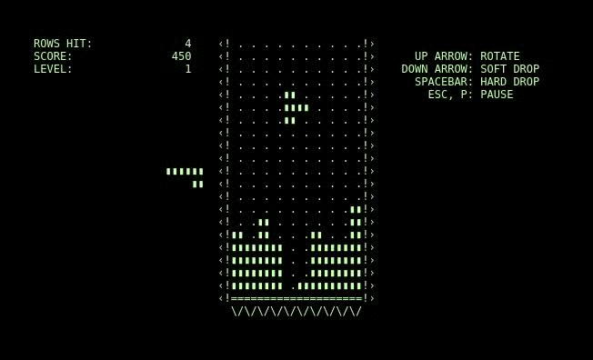
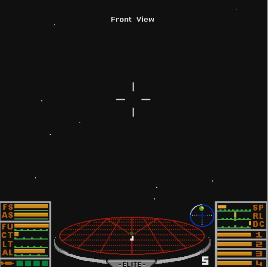

Space Invaders (1978)
Hardware: Intel 8080 (2 MHz)
Memoria: 8KB ROM, 1KB RAM
Innovación: Primer juego en usar dificultad progresiva...

Truco Técnico: El aumento de velocidad era un "bug" convertido en feature.
Tetris (1984)
Plataforma: Electronika 60 (PDP-11 compatible)
Lenguaje: Pascal
Innovación: Algoritmo de rotación de piezas...

Algoritmo Clave: Detección de líneas completas mediante barrido de filas.
Pong (1972)
Hardware: TTL (Transistor-Transistor Logic) puro
Procesador: ¡Ninguno! Solo circuitos lógicos
Innovación: Primer videojuego comercial exitoso. La lógica del juego estaba completamente implementada en hardware, sin software.

Curiosidad: No había CPU ni programa - todo era circuitería analógica y digital pura.
Donkey Kong (1981)
Hardware: CPU Z80 (3.072 MHz)
Memoria: 16KB ROM, 1KB RAM
Innovación: Introducción de personajes con personalidad y narrativa simple...
Truco Técnico: Uso innovador de sprites para animaciones fluidas.
Prince of Persia (1989)
Plataforma: Apple II (1 MHz)
Memoria: 64KB
Innovación: Animación rotoscópica - animaciones realizadas filmando movimientos reales y digitalizándolos frame por frame.

Técnica: Jordan Mechner filmó a su hermano corriendo y saltando, luego digitalizó cada frame manualmente.
SimCity (1989)
Lenguaje: C y Ensamblador
Innovación:Primer simulador complejo de ciudad con sistemas interconectados (electricidad, agua, tráfico, crimen).
Algoritmo: Autómatas celulares para simular la propagación de problemas urbanos como el crimen y la contaminación.
Elite (1984)
Plataforma: BBC Micro (2 MHz)
Memoria: 32KB
Innovación: Universo 3D con 2048 sistemas solares generados proceduralmente usando solo 22KB de código.

Magia:Generación procedimental con semillas matemáticas - cada sistema solar se generaba en tiempo real usando algoritmos deterministas
Lode Runner (1983)
Plataforma: Apple II, IBM PC
Lenguaje: Pascal, ensamblador
Memoria: 48KB
Innovación: Plataformas con niveles complejos y enemigos con IA básica.
The Bard's Tale (1985)
Plataforma: Apple II
Lenguaje: BASIC y ensamblador
Memoria: 64KB
Innovación: Juego de rol con mapas de mazmorras, combates estratégicos y narración avanzada